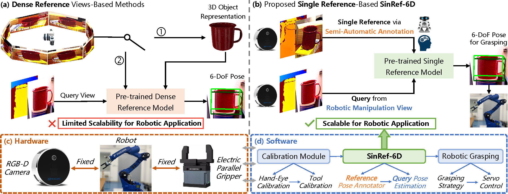
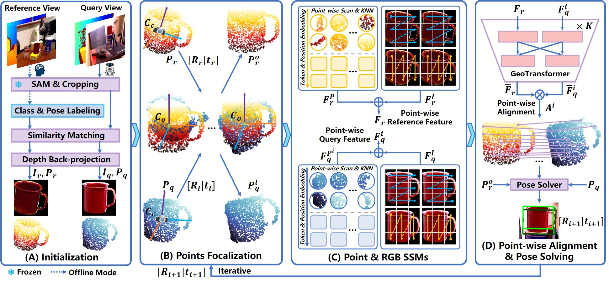
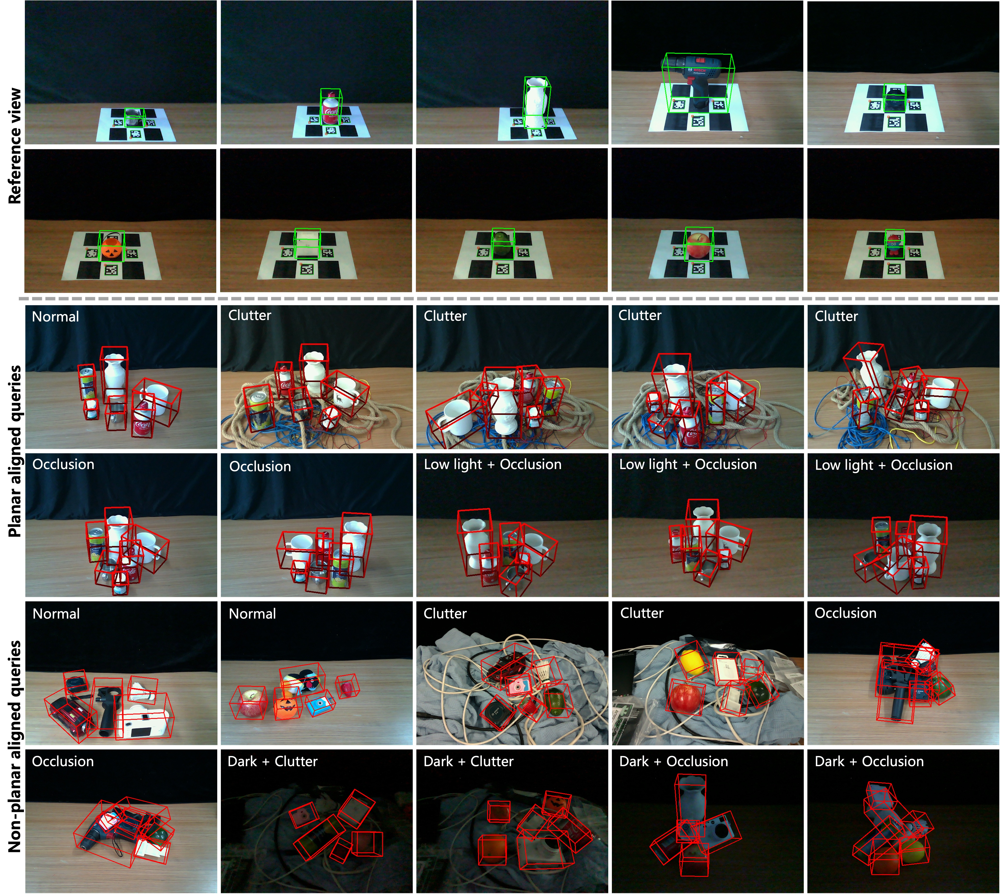
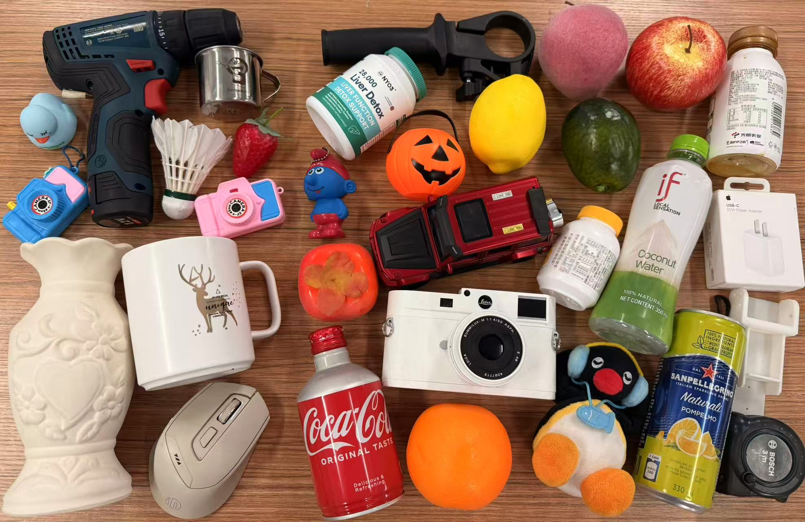

Task Setup and Robotic Integration

Overview of the proposed task setup and robotic integration for unseen object 6-DoF absolute pose estimation tailored for practical robotic applications. (a) and (b) compare two types of manual reference view-based methods. (a) Dense reference views-based methods typically rely on 1): 3D object reconstruction or 2): template matching, which is time- and memory-consuming (not suitable for robotic applications). (b) The proposed method estimates unseen object pose from only a single reference view, providing enhanced efficiency and scalability (suitable for robotic applications). (c) and (d) are the detailed hardware and software architectures of our integrated robotic system. We also develop an efficient semi-automatic annotator based on the proposed task setup, enabling single reference annotation for unseen object within one minute.
Framework Overview

Simple-yet-effective SinRef-6D task setup and framework for real-world robotic application: Given a normal RGB-D reference view of an unseen object, we aim to predict its 6-DoF absolute pose from any query view. SinRef-6D comprises four modules: (A) The reference view is labeled via a semi-automatic annotator, then the RGB-D images of the reference and query views are segmented, and the segmented depth maps are back-projected into point clouds. (B) The corresponding point clouds of the reference and query views are focalized from the camera coordinate system to the object coordinate system. (C) Leveraging the proposed Points and RGB SSMs, features are extracted from the focalized point clouds and RGB images, forming point-wise reference and query features. (D) These features are then used to establish point-wise alignment to solve the object pose. Finally, the computed pose is fed back into module (B) to iteratively improve the accuracy of the point-wise alignment, yielding a more precise object pose.
Real-world Qualitative Experiments

Real-world Robotic Applications

The objects selected for experiment (right are the objects for grasping).
Additional Qualitative Experiments
Comparisons with Gen6D on the LineMod Dataset

Comparisons with MegaPose and ZeroPose on the LM-O and TUD-L Datasets

Comparisons with MegaPose and ZeroPose on the IC-BIN and YCB-V Datasets

Comparisons with MegaPose and ZeroPose on the HB Dataset